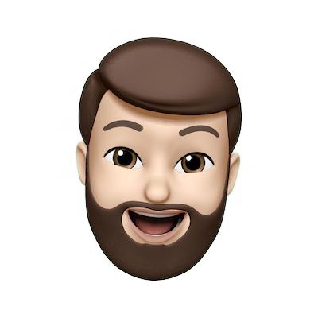

<div
  class="pointer-events-none absolute inset-x-0 top-0 z-10 flex h-full justify-center overflow-hidden"
>
  <!-- { [styles.beams]: isHome }, -->
  <!-- {/* {!isHome && ( */} -->
  <div class="flex w-[108rem] flex-none justify-end">
    <picture>
      <source srcSet="assets/images/beams/docs@30.avif" type="image/avif" />
      
    </picture>
    <picture>
      <source
        srcSet="assets/images/beams/docs-dark@30.avif"
        type="image/avif"
      />
      
    </picture>
  </div>
  <!-- {/* )} */} -->
</div>
<div class="absolute inset-0">
  <!-- <Sidebar
    sidebarOpen={sidebarOpen}
    setSidebarOpen={setSidebarOpen}
    mobileOnly
  >
    <Nav isSidenav onNavItemClick={() => setSidebarOpen(false)} />
  </Sidebar> -->

  <header
    class="fixed top-0 z-30 flex h-16 w-full items-center justify-between px-4 print:hidden lg:items-end lg:px-8"
  >
    <button
      type="button"
      class="focus:outline-none lg:hidden"
      (click)="setSidebarOpen(true)"
    >
      <span class="sr-only">Open sidebar</span>
      <mat-icon class="h-6 w-6" aria-hidden="true">menu</mat-icon>
    </button>

    <a routerLink="/" class="hidden lg:block">
      <!-- <Logo class="w-72" /> -->
      <jr-logo class="w-72"></jr-logo>
    </a>

    <div
      class="divide-black divide-opacity-20 dark:divide-white dark:divide-opacity-20 lg:flex lg:gap-4 lg:divide-x"
    >
      <!-- <Nav class="hidden lg:block" /> -->
      <!-- <ThemeSelector class="pr-0" /> -->
      <jr-theme-selector class="pr-0"></jr-theme-selector>
    </div>
  </header>

  <main
    class="sm-max-h:flex-row sm-max-h:items-center absolute inset-0 mx-auto flex h-full w-full flex-col justify-center gap-8 overflow-hidden p-4 lg:max-w-screen-sm lg:justify-start lg:px-8 lg:pt-16"
    [class.lg:justify-center]="shouldCenterPage"
    [class.lg:pt-0]="shouldCenterPage"
  >
    <div class="sm-max-h:absolute sm-max-h:left-8 mx-auto">
      <!-- Wrapper div needed for the image to stay unwarped -->
      <div
        class="relative h-[150px] w-[150px] rounded-full"
        [ngClass]="{ 'md:h-[300px] md:w-[300px]': isHome }"
      >
        
      </div>
    </div>

    <!-- initial={{ opacity: 0, scale: 0.5 }}
    animate={{ opacity: 1, scale: 1 }}
    exit={{ opacity: 0, scale: 0.5 }}
    transition={{ ease: 'easeInOut' }} -->
    <div
      class="sm-max-h:absolute sm-max-h:top-4 sm-max-h:bottom-4 sm-max-h:right-4 sm-max-h:ml-[182px] sm-max-h:left-8 sm-max-h:w-auto mx-auto"
      [ngClass]="{
        'bg-surface text-on-surface sm-max-h:!top-16 w-full overflow-y-auto rounded-md p-4 shadow ring-1 ring-black ring-opacity-5 dark:shadow-black dark:ring-opacity-50':
          !isHome
      }"
      [ngClass]="{ 'flex items-center': shouldCenterPage }"
    >
      <router-outlet></router-outlet>
    </div>
  </main>
</div>
